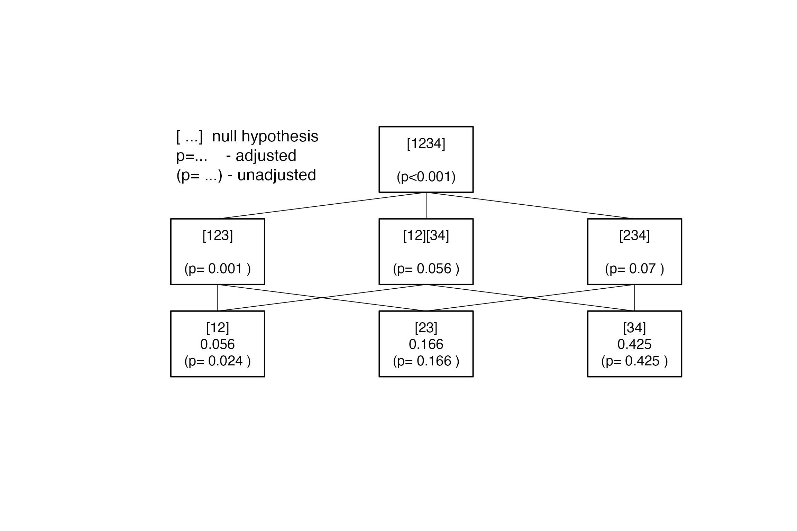
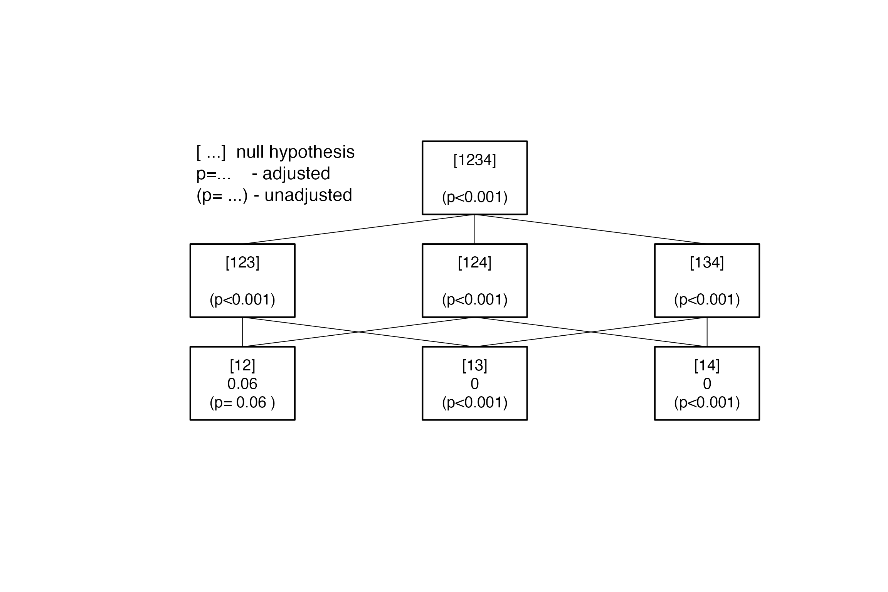

Closed Testing Procedure
Paul Jordan
2020-10-19
closed_testing_procedure.RmdThe Closure Principle
The closure principle is a way to protect the type-I error from muliple testing. Here, we follow the the description in (Bretz, Hothorn, T., and Westfall,P. 2011). It consists of four steps:
Definition of a set \({H} = \{H_1,\ldots, H_n\}\) of elementary hypotheses.
Construction of the closure set (“Hypothesis Tree”).
\[\overline{H} = \left \{ H_I =\bigcap_{i \in I}H_i : \quad I \subseteq \{1,\ldots,n\} \right \} \] (all intersection hypotheses \(H_I\)).
Construction of a local level-\(\alpha\) test for each \(H_I \in \overline{H}\).
Rejection of \(H_i\), if all null hypotheses \(H_I \in \overline{H}\) with \(i \in I\) are rejected at at the local level \(\alpha\).
Adjusted p-values
As the null hypothesis \(H_i\) is rejected only if the null hypothteses \(H_I \in \overline{H}\) with \(i \in I\) are rejected (see point 4. above), the adjusted p-value \(p_{adj;i}\) for \(H_i\) is defined as:
- Denote with \(p_I\) the p-value for a given intersection hypothesis \(H_I, \quad I \subseteq \{1, \ldots,n\}\).
- Then, \(p_{adj;i}=\max_\limits{I:i\in I} p_I,\quad i=1,\ldots , n\).
Implementation
Closure set
The hypothesis tree of the closed testing procedure is created using the function IntersectHypotheses.
Local tests CTP for a given “hypothesis tree”
In case of single hypotheses (ie. if the hypothesis can be described by a single integer vector eg. (1,3,5) the test (F-Test, Kruskal-Wallis-test, probability test, logrank test, ….) is applied directly.
For combined hypotheses (i.e. for hypotheses described by several non-overlapping integer vectors eg. (1,2), (3,4), The procedure differs for the F-test and other tests.
In case of the F-test the contrast matrices for the single hypotheses included are combined and these contrasts are tested simultaneously. For all other tests first the p-values \(p_1, p_2, \ldots ,p_m\) for the single hypotheses are calculated, and than these are combined by Fisher’s combination rule:
If all m hypotheses are assumed to be independent, the test statistics \(X\) follows under \(H_0\) a \(\chi^2\)-distribution with 2m degrees of freedom: \[ X=-2\sum_{i=1}^{m}\ln(p_i) \sim \chi_{2m}^2\] from which a p-value for the global hypothesis can be easily obtained.
In case of trend tests, the same type of test is applied for all intermediate single tests.
Adjusted p-values
Finally the p-values are adjusted by calculating the maximum of the p-values of all tests used at a certain stage of the CTP to decide on the hypothesis in question.
The function AnalyseCTP calculates all local and adjusted p-value for all hypotheses in the closure set (hypothesis tree).
With the function Adjust_raw, it is also possible to use p-values that have been calculated by other functions or programs for the calculation of the adjusted p-values.
Examples
Comparing means
The dataframe pasi comprises the changes in PASI-score (Psoirasis Area and Severity Index) from baseline within two month of 72 patients treated with three different doses of Etretin or Placebo in a double blind study.
Testing the elementary hypotheses 1:2, 1:3, 1:4 simultaneously using the F-Test i.e. testing \(H_1: \mu_1=\mu_2\), \(H_2: \mu_1=\mu_3\) and \(H_3: \mu_1=\mu_4\) simultaneously. The groups with levels 2,3,4 are compared to the control (Placebo) group (level 1). In this specific example, the adjusted and unadjusted p-values are the same. All doses show a significant effect compared to Placebo
library(CTP) data(pasi) three.to.first <- IntersectHypotheses(list(1:2,c(1,3),c(1,4))) Display(three.to.first,Type="s",arrow=TRUE)

pasi.ctp.F1 <- AnalyseCTP(three.to.first,pasi.ch~dose,pasi) xsx <- summary(three.to.first) ## New names: ## * hyp.no -> hyp.no...2 ## * hyp.no -> hyp.no...5 ## ## Hypotheses to be tested ## ======================= ## ## hyp.no level hypothesis.name ## 1 1 [12] ## 2 1 [13] ## 3 1 [14] ## 1 2 [123] ## 2 2 [124] ## 3 2 [134] ## 1 3 [1234] ## ## Connection structure of the hypotheses ## ====================================== ## ## Level Connection ## 1 [12] -> [123] ## 1 [12] -> [124] ## 1 [13] -> [123] ## 1 [13] -> [134] ## 1 [14] -> [124] ## 1 [14] -> [134] ## 2 [123] -> [1234] ## 2 [124] -> [1234] ## 2 [134] -> [1234] summary(pasi.ctp.F1) ## ## Summary of Closed Testing Procedure ## =================================== ## ## Model : pasi.ch ~ dose , test : F ## ## Factor levels: 1=Placebo, 2=ET.10mg, 3=ET.25mg, 4=ET.50mg ## ## Hypotheses and p-values ## ----------------------- ## ## Hypothesis Level raw p-value adj. p-value ## [12] 1 4.748e-03 4.748e-03 ## [13] 1 2.737e-05 1.063e-04 ## [14] 1 1.826e-06 9.797e-06 ## [123] 2 1.063e-04 1.063e-04 ## [124] 2 9.797e-06 9.797e-06 ## [134] 2 1.736e-06 6.542e-06 ## [1234] 3 6.542e-06 6.542e-06 Display(pasi.ctp.F1)

data(pasi) three.to.first <- IntersectHypotheses(list(1:2,c(1,3),c(1,4))) Display(three.to.first,Type="s",arrow=TRUE)
pasi.ctp.F1 <- AnalyseCTP(three.to.first,pasi.ch~dose,pasi) xsx <- summary(three.to.first) ## New names: ## * hyp.no -> hyp.no...2 ## * hyp.no -> hyp.no...5 ## ## Hypotheses to be tested ## ======================= ## ## hyp.no level hypothesis.name ## 1 1 [12] ## 2 1 [13] ## 3 1 [14] ## 1 2 [123] ## 2 2 [124] ## 3 2 [134] ## 1 3 [1234] ## ## Connection structure of the hypotheses ## ====================================== ## ## Level Connection ## 1 [12] -> [123] ## 1 [12] -> [124] ## 1 [13] -> [123] ## 1 [13] -> [134] ## 1 [14] -> [124] ## 1 [14] -> [134] ## 2 [123] -> [1234] ## 2 [124] -> [1234] ## 2 [134] -> [1234] summary(pasi.ctp.F1) ## ## Summary of Closed Testing Procedure ## =================================== ## ## Model : pasi.ch ~ dose , test : F ## ## Factor levels: 1=Placebo, 2=ET.10mg, 3=ET.25mg, 4=ET.50mg ## ## Hypotheses and p-values ## ----------------------- ## ## Hypothesis Level raw p-value adj. p-value ## [12] 1 4.748e-03 4.748e-03 ## [13] 1 2.737e-05 1.063e-04 ## [14] 1 1.826e-06 9.797e-06 ## [123] 2 1.063e-04 1.063e-04 ## [124] 2 9.797e-06 9.797e-06 ## [134] 2 1.736e-06 6.542e-06 ## [1234] 3 6.542e-06 6.542e-06 Display(pasi.ctp.F1)
Another hypothesis structure
Testing the elementary hypotheses 1:2, 2:3, 3:4 simultaneously using the F-Test, i.e. testing \(H_1: \mu_1=\mu_2\), \(H_2: \mu_2=\mu_3\) and \(H_3: \mu_3=\mu_4\) simultaneously. This provides quite different results (compared to pasi.ctp.F1): No further improvement for higher doses.
dose.steps4 <- IntersectHypotheses(list(1:2,2:3,3:4)) Display(dose.steps4,arr=TRUE)
pasi.ctp.F2 <- AnalyseCTP(dose.steps4,pasi.ch~dose,pasi) summary(pasi.ctp.F2) ## ## Summary of Closed Testing Procedure ## =================================== ## ## Model : pasi.ch ~ dose , test : F ## ## Factor levels: 1=Placebo, 2=ET.10mg, 3=ET.25mg, 4=ET.50mg ## ## Hypotheses and p-values ## ----------------------- ## ## Hypothesis Level raw p-value adj. p-value ## [12] 1 4.748e-03 1.506e-02 ## [23] 1 1.139e-01 1.139e-01 ## [34] 1 5.257e-01 5.257e-01 ## [123] 2 1.063e-04 1.063e-04 ## [12][34] 2 1.506e-02 1.506e-02 ## [234] 2 7.205e-02 7.205e-02 ## [1234] 3 6.542e-06 6.542e-06 Display(pasi.ctp.F2)

Other tests
For the same hypotheis structure, other tests can also be used:
Kruskal-Wallis test of trend for all single hypotheses
pasi.ctp.K <- AnalyseCTP(dose.steps4,pasi.ch~dose,pasi, test="kruskal") summary(pasi.ctp.K) ## ## Summary of Closed Testing Procedure ## =================================== ## ## Model : pasi.ch ~ dose , test : kruskal ## ## Factor levels: 1=Placebo, 2=ET.10mg, 3=ET.25mg, 4=ET.50mg ## ## Hypotheses and p-values ## ----------------------- ## ## Hypothesis Level raw p-value adj. p-value ## [12] 1 2.350e-02 5.605e-02 ## [23] 1 1.655e-01 1.655e-01 ## [34] 1 4.255e-01 4.255e-01 ## [123] 2 1.466e-03 1.466e-03 ## [12][34] 2 5.605e-02 5.605e-02 ## [234] 2 6.988e-02 6.988e-02 ## [1234] 3 7.557e-05 7.557e-05 Display(pasi.ctp.K)

Jonckheere-Terpstra test of trend for all single hypotheses
pasi.ctp.J1 <- AnalyseCTP(dose.steps4,pasi.ch~dose,pasi, test="jonckheere",alternative="increasing") pasi.ctp.J2 <- AnalyseCTP(dose.steps4,pasi.ch~dose,pasi, test="jonckheere",alternative="two.sided") summary(pasi.ctp.J1) ## ## Summary of Closed Testing Procedure ## =================================== ## ## Model : pasi.ch ~ dose , test : jonckheere ## ## Factor levels: 1=Placebo, 2=ET.10mg, 3=ET.25mg, 4=ET.50mg ## ## Hypotheses and p-values ## ----------------------- ## ## Hypothesis Level raw p-value adj. p-value ## [12] 1 1.179e-02 5.652e-02 ## [23] 1 8.284e-02 8.284e-02 ## [34] 1 2.141e-01 2.141e-01 ## [123] 2 1.563e-04 1.563e-04 ## [12][34] 2 5.652e-02 5.652e-02 ## [234] 2 1.189e-02 1.189e-02 ## [1234] 3 1.890e-06 1.890e-06 summary(pasi.ctp.J2) ## ## Summary of Closed Testing Procedure ## =================================== ## ## Model : pasi.ch ~ dose , test : jonckheere ## ## Factor levels: 1=Placebo, 2=ET.10mg, 3=ET.25mg, 4=ET.50mg ## ## Hypotheses and p-values ## ----------------------- ## ## Hypothesis Level raw p-value adj. p-value ## [12] 1 2.359e-02 5.652e-02 ## [23] 1 1.657e-01 1.657e-01 ## [34] 1 4.283e-01 4.283e-01 ## [123] 2 3.127e-04 3.127e-04 ## [12][34] 2 5.652e-02 5.652e-02 ## [234] 2 2.377e-02 2.377e-02 ## [1234] 3 3.781e-06 3.781e-06 pasi.ctp.J3 <- AnalyseCTP(dose.steps4,pasi.ch~dose,pasi, test="jonckheere") summary(pasi.ctp.J3) ## ## Summary of Closed Testing Procedure ## =================================== ## ## Model : pasi.ch ~ dose , test : jonckheere ## ## Factor levels: 1=Placebo, 2=ET.10mg, 3=ET.25mg, 4=ET.50mg ## ## Hypotheses and p-values ## ----------------------- ## ## Hypothesis Level raw p-value adj. p-value ## [12] 1 2.359e-02 5.652e-02 ## [23] 1 1.657e-01 1.657e-01 ## [34] 1 4.283e-01 4.283e-01 ## [123] 2 3.127e-04 3.127e-04 ## [12][34] 2 5.652e-02 5.652e-02 ## [234] 2 2.377e-02 2.377e-02 ## [1234] 3 3.781e-06 3.781e-06 Display(pasi.ctp.J1)

Proportions
The data set colorectal contains the response rates from a dose finding study in metastatic colorectal cancer. Two doses of the experimental drug were compared to the standard treatment. The response rates in the two dose groups are compared to the control responder rate using both, the \(\chi^2\)-test and Fisher’s exact test.
two.to.first<- IntersectHypotheses(list(1:2,c(1,3))) Display(two.to.first,Type="s",main="two vs control",arrow=TRUE)

#The two elementary hypotheses are tested after comparing the three proportions globally. data(colorectal) colorectal.ctp <-AnalyseCTP(two.to.first,responder~dose,data=colorectal, test="prob") summary(colorectal.ctp) ## ## Summary of Closed Testing Procedure ## =================================== ## ## Model : responder ~ dose , test : prob ## ## Factor levels: 1=control, 2=low, 3=high ## ## Hypotheses and p-values ## ----------------------- ## ## Hypothesis Level raw p-value adj. p-value ## [12] 1 0.02018 0.04459 ## [13] 1 0.09877 0.09877 ## [123] 2 0.04459 0.04459 Display(colorectal.ctp,Type="t")

colorectal.chisq <-AnalyseCTP(two.to.first,responder~dose,data=colorectal, test="chisq") summary(colorectal.chisq, digits=1) ## ## Summary of Closed Testing Procedure ## =================================== ## ## Model : responder ~ dose , test : chisq ## ## Factor levels: 1=control, 2=low, 3=high ## ## Hypotheses and p-values ## ----------------------- ## ## Hypothesis Level raw p-value adj. p-value ## [12] 1 0.03 0.05 ## [13] 1 0.11 0.11 ## [123] 2 0.05 0.05
Survival Analysis with the logrank test
This example uses the sample dataset ovarian from the package survival. The overall survival curves of the two treatments rx do not differ significantly:
library(survival) data(ovarian) print(survdiff(Surv(futime,fustat)~rx, data=ovarian)) ## Call: ## survdiff(formula = Surv(futime, fustat) ~ rx, data = ovarian) ## ## N Observed Expected (O-E)^2/E (O-E)^2/V ## rx=1 13 7 5.23 0.596 1.06 ## rx=2 13 5 6.77 0.461 1.06 ## ## Chisq= 1.1 on 1 degrees of freedom, p= 0.3
Together with the performance subgroups ecog=1 and ecog=2 , a factor “subgroups” defined by the combinations of the performance measure ecog.ps and the treatment rx.
ovarian$subgroups <- as.factor(10*ovarian$ecog.ps+ovarian$rx) print(head(ovarian)) ## futime fustat age resid.ds rx ecog.ps subgroups ## 1 59 1 72.3315 2 1 1 11 ## 2 115 1 74.4932 2 1 1 11 ## 3 156 1 66.4658 2 1 2 21 ## 4 421 0 53.3644 2 2 1 12 ## 5 431 1 50.3397 2 1 1 11 ## 6 448 0 56.4301 1 1 2 21
Then, the treatment differences within the performance subgroups ecog=1 and ecog=2 are compared. I.e. the elementary hypotheses are subgroup11=subgroup12 and subgroup21=subgroup22 or \(\{(1,2),(3,4)\}\).
comb.sub <- IntersectHypotheses(list(c(1,2),c(3,4))) #Display(comb.sub) ovar.ctp <-AnalyseCTP(comb.sub,Surv(futime,fustat)~subgroups, ovarian, test="lgrank") summary(ovar.ctp) ## ## Summary of Closed Testing Procedure ## =================================== ## ## Model : Surv(futime, fustat) ~ subgroups , test : lgrank ## ## Factor levels: 1=11, 2=12, 3=21, 4=22 ## ## Hypotheses and p-values ## ----------------------- ## ## Hypothesis Level raw p-value adj. p-value ## [12] 1 0.1119 0.3171 ## [34] 1 0.8434 0.8434 ## [12][34] 2 0.3171 0.3171 Display(ovar.ctp)

Comparing means when a covariate is included
In a study with diabetes type II patients (dataset glucose), three doses of a drug are compared to a placebo. The primary variable is the change of fasting plasma glucose from baseline. Fasting plasma glucose at baseline is included into the model as covariate (only implmented for linear models).
data(glucose) glucose.ctp <- AnalyseCTP(three.to.first,GLUCOSE.CHANGE~GLUCOSE.BLA+DOSE, data=glucose, factor.name="DOSE") summary(glucose.ctp) ## ## Summary of Closed Testing Procedure ## =================================== ## ## Model : GLUCOSE.CHANGE ~ GLUCOSE.BLA + DOSE , test : F ## ## Factor levels: 1=PLACEBO, 2=LOW, 3=MEDIUM, 4=HIGH ## ## Hypotheses and p-values ## ----------------------- ## ## Hypothesis Level raw p-value adj. p-value ## [12] 1 6.033e-02 6.033e-02 ## [13] 1 7.086e-05 3.536e-04 ## [14] 1 6.917e-05 3.464e-04 ## [123] 2 3.536e-04 3.536e-04 ## [124] 2 3.464e-04 3.464e-04 ## [134] 2 2.407e-05 7.375e-05 ## [1234] 3 7.375e-05 7.375e-05 Display(glucose.ctp,Type="s")
Large hypothesis trees
Whith an increasing number of hypotheses to test, the graphical display may become quite confusing:
G <- factor(rep(1:5,each=4) ) y <- rnorm(20) Y <- data.frame(G,y) xxx <- IntersectHypotheses(list(1:2,c(1,3),c(1,4),c(1,5),c(2,5),c(3,4))) summary(xxx) ## New names: ## * hyp.no -> hyp.no...2 ## * hyp.no -> hyp.no...5 ## ## Hypotheses to be tested ## ======================= ## ## hyp.no level hypothesis.name ## 1 1 [12] ## 2 1 [13] ## 3 1 [14] ## 4 1 [15] ## 5 1 [25] ## 6 1 [34] ## 1 2 [123] ## 2 2 [124] ## 3 2 [125] ## 4 2 [12][34] ## 5 2 [134] ## 6 2 [135] ## 7 2 [13][25] ## 8 2 [145] ## 9 2 [14][25] ## 10 2 [15][34] ## 11 2 [25][34] ## 1 3 [1234] ## 2 3 [1235] ## 3 3 [12345] ## 4 3 [1245] ## 5 3 [125][34] ## 6 3 [1345] ## 7 3 [134][25] ## 1 4 [12345] ## ## Connection structure of the hypotheses ## ====================================== ## ## Level Connection ## 1 [12] -> [123] ## 1 [12] -> [124] ## 1 [12] -> [125] ## 1 [12] -> [12][34] ## 1 [13] -> [123] ## 1 [13] -> [134] ## 1 [13] -> [135] ## 1 [13] -> [13][25] ## 1 [14] -> [124] ## 1 [14] -> [134] ## 1 [14] -> [145] ## 1 [14] -> [14][25] ## 1 [15] -> [125] ## 1 [15] -> [135] ## 1 [15] -> [145] ## 1 [15] -> [15][34] ## 1 [25] -> [125] ## 1 [25] -> [13][25] ## 1 [25] -> [14][25] ## 1 [25] -> [25][34] ## 1 [34] -> [12][34] ## 1 [34] -> [134] ## 1 [34] -> [15][34] ## 1 [34] -> [25][34] ## 2 [12][34] -> [1234] ## 2 [12][34] -> [12345] ## 2 [12][34] -> [125][34] ## 2 [123] -> [1234] ## 2 [123] -> [1235] ## 2 [123] -> [12345] ## 2 [124] -> [1234] ## 2 [124] -> [12345] ## 2 [124] -> [1245] ## 2 [125] -> [1235] ## 2 [125] -> [12345] ## 2 [125] -> [1245] ## 2 [125] -> [125][34] ## 2 [13][25] -> [1235] ## 2 [13][25] -> [12345] ## 2 [13][25] -> [134][25] ## 2 [134] -> [1234] ## 2 [134] -> [12345] ## 2 [134] -> [1345] ## 2 [134] -> [134][25] ## 2 [135] -> [1235] ## 2 [135] -> [12345] ## 2 [135] -> [1345] ## 2 [14][25] -> [12345] ## 2 [14][25] -> [1245] ## 2 [14][25] -> [134][25] ## 2 [145] -> [12345] ## 2 [145] -> [1245] ## 2 [145] -> [1345] ## 2 [15][34] -> [12345] ## 2 [15][34] -> [125][34] ## 2 [15][34] -> [1345] ## 2 [25][34] -> [12345] ## 2 [25][34] -> [125][34] ## 2 [25][34] -> [134][25] ## 3 [1234] -> [12345] ## 3 [12345] -> [12345] ## 3 [1235] -> [12345] ## 3 [1245] -> [12345] ## 3 [125][34] -> [12345] ## 3 [134][25] -> [12345] ## 3 [1345] -> [12345] Display(xxx)

“External” p-values
It is possible to use:
- IntersectHypotheses to create the closure set and Display to plot the corresponding hypothesis tree.
- Calculate the p-values for the local hypotheses with other functions or software.
- Import these p-values.
- Use Adjust_raw to calculte the adjusted p- values. Adjust_raw delivers an object of class ctp.
- Use summary and Display on this object.
xxx <- IntersectHypotheses(list(1:2,c(1,3),c(1,4))) xxx$hypothesis ## [[1]] ## [[1]][[1]] ## [1] 1 2 ## ## [[1]][[2]] ## [1] 1 3 ## ## [[1]][[3]] ## [1] 1 4 ## ## ## [[2]] ## [[2]][[1]] ## [1] 1 2 3 ## ## [[2]][[2]] ## [1] 1 2 4 ## ## [[2]][[3]] ## [1] 1 3 4 ## ## ## [[3]] ## [[3]][[1]] ## [1] 1 2 3 4 data.frame(xxx$hypnames) ## hyp.no level hypothesis.name ## 1 1 1 [12] ## 2 2 1 [13] ## 3 3 1 [14] ## 4 1 2 [123] ## 5 2 2 [124] ## 6 3 2 [134] ## 7 1 3 [1234] xxx$hypnames ## hyp.no level hypothesis.name ## 1 1 1 [12] ## 2 2 1 [13] ## 3 3 1 [14] ## 4 1 2 [123] ## 5 2 2 [124] ## 6 3 2 [134] ## 7 1 3 [1234] p.val<-c(0.05,0.04,0.02,0.08,0.03,0.03,0.04) Adjust_raw(xxx, p.val) ## $CTPparms ## $CTPparms$hyplist ## $CTPparms$hyplist[[1]] ## $CTPparms$hyplist[[1]][[1]] ## [1] 1 2 ## ## $CTPparms$hyplist[[1]][[2]] ## [1] 1 3 ## ## $CTPparms$hyplist[[1]][[3]] ## [1] 1 4 ## ## ## $CTPparms$hyplist[[2]] ## $CTPparms$hyplist[[2]][[1]] ## [1] 1 2 3 ## ## $CTPparms$hyplist[[2]][[2]] ## [1] 1 2 4 ## ## $CTPparms$hyplist[[2]][[3]] ## [1] 1 3 4 ## ## ## $CTPparms$hyplist[[3]] ## $CTPparms$hyplist[[3]][[1]] ## [1] 1 2 3 4 ## ## ## ## $CTPparms$hypnames ## hyp.no level hypothesis.name pvalue ## 1 1 1 [12] 0.05 ## 2 2 1 [13] 0.04 ## 3 3 1 [14] 0.02 ## 4 1 2 [123] 0.08 ## 5 2 2 [124] 0.03 ## 6 3 2 [134] 0.03 ## 7 1 3 [1234] 0.04 ## ## $CTPparms$connections ## $CTPparms$connections[[1]] ## hypold hypnew levold levnew ## 1 1 1 1 2 ## 2 2 1 1 2 ## 3 1 2 1 2 ## 4 3 2 1 2 ## 5 2 3 1 2 ## 6 3 3 1 2 ## ## $CTPparms$connections[[2]] ## hypold hypnew levold levnew ## 1 1 1 2 3 ## 2 2 1 2 3 ## 3 3 1 2 3 ## ## ## $CTPparms$model ## NULL ## ## $CTPparms$lm.obj ## NULL ## ## $CTPparms$data ## NULL ## ## $CTPparms$test ## [1] "ctp." ## ## $CTPparms$fac ## NULL ## ## $CTPparms$facname ## NULL ## ## $CTPparms$level ## NULL ## ## $CTPparms$nlevel ## [1] 0 ## ## $CTPparms$resp ## NULL ## ## $CTPparms$respname ## [1] "" ## ## ## $pvalues ## hyp.no level hypothesis.name pvalue pvalue.adj ## 1 1 1 [12] 0.05 0.08 ## 2 2 1 [13] 0.04 0.08 ## 3 3 1 [14] 0.02 0.04 ## 4 1 2 [123] 0.08 0.08 ## 5 2 2 [124] 0.03 0.04 ## 6 3 2 [134] 0.03 0.04 ## 7 1 3 [1234] 0.04 0.04 ## ## $info ## NULL ## ## attr(,"class") ## [1] "ctp" # the vector of p-values calculated by another software # you may supply the hypothesis names as names of the vector result <- Adjust_raw(ctp.struc=three.to.first, p.value=p.val) summary(result) ## ## Summary of Closed Testing Procedure ## =================================== ## ## Hypotheses and p-values ## ----------------------- ## ## Hypothesis Level raw p-value adj. p-value ## [12] 1 0.05 0.08 ## [13] 1 0.04 0.08 ## [14] 1 0.02 0.04 ## [123] 2 0.08 0.08 ## [124] 2 0.03 0.04 ## [134] 2 0.03 0.04 ## [1234] 3 0.04 0.04 # details may be documented result<-Adjust_raw(ctp.struc=three.to.first, p.value=p.val ,dataset.name="mydata", factor.name="treatment" ,factor.levels=c("A","B","C","D"), model=y~treatment ,test.name="F") summary(result) ## ## Summary of Closed Testing Procedure ## =================================== ## ## Model : y ~ treatment , test : F ## ## Factor levels: 1=A, 2=B, 3=C, 4=D ## ## Hypotheses and p-values ## ----------------------- ## ## Hypothesis Level raw p-value adj. p-value ## [12] 1 0.05 0.08 ## [13] 1 0.04 0.08 ## [14] 1 0.02 0.04 ## [123] 2 0.08 0.08 ## [124] 2 0.03 0.04 ## [134] 2 0.03 0.04 ## [1234] 3 0.04 0.04 Display(result)
References
Bauer, Peter. 1991. “Multiple Testing in Clinical Trials.” Statistics in Medicine 10 (4): 261–63.
Bretz, Frank, Hothorn, T., and Westfall,P. 2011. Multiple Comparisons Using R. CRC Press.
Dmitrienko, Alex, Tamhane, A., and Bretz, F. 2010. Multiple Testing Problems in Pharmaceutical Statistics. Chapman & Hall.
Marcus, Ruth, Peritz, E., and Gabriel, K.R. 1976. “On Closed Testing Procedures with Special Reference to Ordered Analysis of Variance.” Biometrika 63: 655–60.